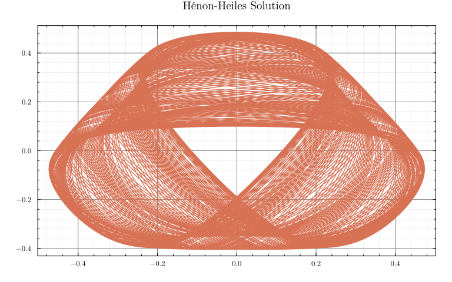
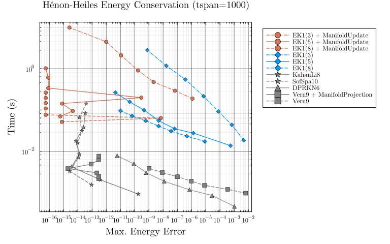
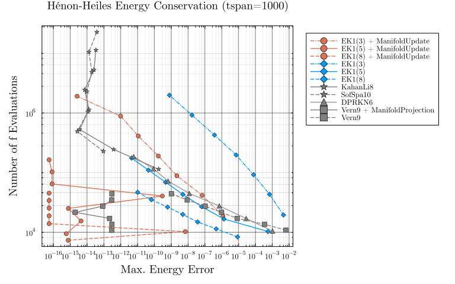

Hénon-Heiles Energy Conservation
The Hénon-Heiles system is a Hamiltonian ODE whose solutions preserve energy. This benchmark compares the energy preservation of different solver approaches using a work-precision diagram with the maximum energy error as the accuracy metric.
Code:
using LinearAlgebra, Statisticsusing SciMLBase, OrdinaryDiffEq, DiffEqCallbacks, Plotsusing ProbNumDiffEqPlots.theme( :dao; markerstrokewidth=0.5, legend=:outertopright, margin=5Plots.mm, xticks=10.0 .^ (-16:1:16),)Code:
function HH_acceleration!(ddu, du, u, p, t) ddu[1] = -u[1] - 2 * u[1] * u[2] ddu[2] = u[2]^2 - u[2] - u[1]^2endu0 = [0.0, 0.1]du0 = [0.5, 0.0]tspan = (0.0, 1000.0)prob_2nd = SecondOrderODEProblem(HH_acceleration!, du0, u0, tspan)function dp!(dp, p, q, params, t) dp[1] = -q[1] - 2 * q[1] * q[2] dp[2] = q[2]^2 - q[2] - q[1]^2endfunction dq!(dq, p, q, params, t) dq[1] = p[1] dq[2] = p[2]endprob_dyn = DynamicalODEProblem(dp!, dq!, du0, u0, tspan)PotentialEnergy(x, y) = 1 // 2 * (x^2 + y^2 + 2x^2 * y - 2 // 3 * y^3)KineticEnergy(dx, dy) = 1 // 2 * (dx^2 + dy^2)H(dx, dy, x, y) = PotentialEnergy(x, y) + KineticEnergy(dx, dy)H(u) = H(u...)E0 = H(du0..., u0...)ref_sol = solve(prob_2nd, Vern9(), abstol=1/10^14, reltol=1/10^14)plot(ref_sol, idxs=(3, 4), title="Hénon-Heiles Solution", legend=false, xticks=:auto, yticks=:auto)
Energy Error Work-Precision Diagram
We measure the maximum energy error $\max_t |H(t) - H(0)|$ over the full trajectory for various solver configurations and tolerances, and plot it against runtime.
Code:
# `ManifoldUpdate` fires as a `DiscreteCallback`, which by default saves the state both# before and after its `affect!`; since `savevalues!` at the "before" position always# runs regardless of `save_positions` when `save_everystep=true`, both the raw and the# manifold-corrected state end up in `sol.u` at the same `t`. Keep only the last (i.e.# manifold-corrected) value per unique `t` so the error metric reflects the actual output.function last_per_t(sol) n = length(sol.t) return (sol.u[i] for i in 1:n if i == n || sol.t[i] != sol.t[i+1])endfunction adaptive_energy_wpd(prob, alg, abstols, reltols, E0; numruns=5, kwargs...) errors = Float64[] times = Float64[] nevals = Int[] for (abstol, reltol) in zip(abstols, reltols) kw = (; abstol, reltol, dense=false, maxiters=Int(1e7), kwargs...) local sol try sol = solve(prob, alg; kw...) catch e @warn "solve failed, skipping" alg abstol reltol exception = e continue end sol.retcode == SciMLBase.ReturnCode.Success || continue push!(errors, maximum(abs(H(u) - E0) for u in last_per_t(sol))) push!(nevals, sol.stats.nf + sol.stats.nf2) solve(prob, alg; kw...) t = minimum(@elapsed(solve(prob, alg; kw...)) for _ in 1:numruns) push!(times, t) end errors, times, nevalsendfunction fixedstep_energy_wpd(prob, alg, dts, E0; numruns=5, kwargs...) errors = Float64[] times = Float64[] nevals = Int[] for dt in dts kw = (; dt, adaptive=false, dense=false, maxiters=Int(1e7), kwargs...) local sol try sol = solve(prob, alg; kw...) catch e @warn "solve failed, skipping" alg dt exception = e continue end sol.retcode == SciMLBase.ReturnCode.Success || continue push!(errors, maximum(abs(H(u) - E0) for u in last_per_t(sol))) push!(nevals, sol.stats.nf + sol.stats.nf2) solve(prob, alg; kw...) t = minimum(@elapsed(solve(prob, alg; kw...)) for _ in 1:numruns) push!(times, t) end errors, times, nevalsendCode:
abstols = 1.0 ./ 10.0 .^ (5:11)reltols = 1.0 ./ 10.0 .^ (2:8)dts = 10.0 .^ range(-0.5, -2.5, length=7)residual(u) = [H(u) - E0]cb_mu = ManifoldUpdate(residual)function energy_manifold!(resid, u, p) resid[1] = H(u) - E0endfunction energy_jacobian!(J, u, p) dx, dy, x, y = u J[1, 1] = dx J[1, 2] = dy J[1, 3] = x + 2*x*y J[1, 4] = y + x^2 - y^2endcb_mp = ManifoldProjection(energy_manifold!; manifold_jacobian=energy_jacobian!, resid_prototype=zeros(1), autonomous=Val(true))Code:
e_ek1_mu3, t_ek1_mu3, n_ek1_mu3 = adaptive_energy_wpd( prob_2nd, EK1(order=3, smooth=false), abstols, reltols, E0; callback=cb_mu)e_ek1_mu5, t_ek1_mu5, n_ek1_mu5 = adaptive_energy_wpd( prob_2nd, EK1(order=5, smooth=false), abstols, reltols, E0; callback=cb_mu)e_ek1_mu8, t_ek1_mu8, n_ek1_mu8 = adaptive_energy_wpd( prob_2nd, EK1(order=8, smooth=false), abstols, reltols, E0; callback=cb_mu)e_ek1_3, t_ek1_3, n_ek1_3 = adaptive_energy_wpd( prob_2nd, EK1(order=3, smooth=false), abstols, reltols, E0)e_ek1_5, t_ek1_5, n_ek1_5 = adaptive_energy_wpd( prob_2nd, EK1(order=5, smooth=false), abstols, reltols, E0)e_ek1_8, t_ek1_8, n_ek1_8 = adaptive_energy_wpd( prob_2nd, EK1(order=8, smooth=false), abstols, reltols, E0)e_kl8, t_kl8, n_kl8 = fixedstep_energy_wpd(prob_dyn, KahanLi8(), dts, E0)e_ss10, t_ss10, n_ss10 = fixedstep_energy_wpd(prob_dyn, SofSpa10(), dts, E0)e_dprkn6, t_dprkn6, n_dprkn6 = adaptive_energy_wpd(prob_2nd, DPRKN6(), abstols, reltols, E0)e_vern9_mp, t_vern9_mp, n_vern9_mp = adaptive_energy_wpd( prob_2nd, Vern9(), abstols, reltols, E0; callback=cb_mp)e_vern9, t_vern9, n_vern9 = adaptive_energy_wpd(prob_2nd, Vern9(), abstols, reltols, E0)Code:
plot(xlabel="Max. Energy Error", ylabel="Time (s)", xscale=:log10, yscale=:log10, title="Hénon-Heiles Energy Conservation (tspan=1000)")plot!(e_ek1_mu3, t_ek1_mu3, label="EK1(3) + ManifoldUpdate", color=1, marker=:circle, linestyle=:dashdot)plot!(e_ek1_mu5, t_ek1_mu5, label="EK1(5) + ManifoldUpdate", color=1, marker=:circle)plot!(e_ek1_mu8, t_ek1_mu8, label="EK1(8) + ManifoldUpdate", color=1, marker=:circle, linestyle=:dash)plot!(e_ek1_3, t_ek1_3, label="EK1(3)", color=2, marker=:diamond, linestyle=:dashdot)plot!(e_ek1_5, t_ek1_5, label="EK1(5)", color=2, marker=:diamond)plot!(e_ek1_8, t_ek1_8, label="EK1(8)", color=2, marker=:diamond, linestyle=:dash)plot!(e_kl8, t_kl8, label="KahanLi8", color=:gray, marker=:star5)plot!(e_ss10, t_ss10, label="SofSpa10", color=:gray, marker=:star5, linestyle=:dash)plot!(e_dprkn6, t_dprkn6, label="DPRKN6", color=:gray, marker=:utriangle, linestyle=:dot)plot!(e_vern9_mp, t_vern9_mp, label="Vern9 + ManifoldProjection", color=:gray, marker=:square)plot!(e_vern9, t_vern9, label="Vern9", color=:gray, marker=:square, linestyle=:dash)
Code:
plot(xlabel="Max. Energy Error", ylabel="Number of f Evaluations", xscale=:log10, yscale=:log10, title="Hénon-Heiles Energy Conservation (tspan=1000)")plot!(e_ek1_mu3, n_ek1_mu3, label="EK1(3) + ManifoldUpdate", color=1, marker=:circle, linestyle=:dashdot)plot!(e_ek1_mu5, n_ek1_mu5, label="EK1(5) + ManifoldUpdate", color=1, marker=:circle)plot!(e_ek1_mu8, n_ek1_mu8, label="EK1(8) + ManifoldUpdate", color=1, marker=:circle, linestyle=:dash)plot!(e_ek1_3, n_ek1_3, label="EK1(3)", color=2, marker=:diamond, linestyle=:dashdot)plot!(e_ek1_5, n_ek1_5, label="EK1(5)", color=2, marker=:diamond)plot!(e_ek1_8, n_ek1_8, label="EK1(8)", color=2, marker=:diamond, linestyle=:dash)plot!(e_kl8, n_kl8, label="KahanLi8", color=:gray, marker=:star5)plot!(e_ss10, n_ss10, label="SofSpa10", color=:gray, marker=:star5, linestyle=:dash)plot!(e_dprkn6, n_dprkn6, label="DPRKN6", color=:gray, marker=:utriangle, linestyle=:dot)plot!(e_vern9_mp, n_vern9_mp, label="Vern9 + ManifoldProjection", color=:gray, marker=:square)plot!(e_vern9, n_vern9, label="Vern9", color=:gray, marker=:square, linestyle=:dash)
Appendix
Computer information:
using InteractiveUtilsInteractiveUtils.versioninfo()Julia Version 1.13.0
Commit d1c37793dd2 (2026-09-09 19:00 UTC)
Build Info:
Official https://julialang.org release
Platform Info:
OS: Linux (x86_64-linux-gnu)
CPU: 128 × AMD Ryzen Threadripper PRO 7985WX 64-Cores
WORD_SIZE: 64
LLVM: libLLVM-20.1.8 (ORCJIT, znver4)
GC: Built with stock GC
Threads: 16 default, 1 interactive, 16 GC (on 128 virtual cores)
Environment:
LD_LIBRARY_PATH = Package information:
using PkgPkg.status()Status `/home/nrbosch/.julia/dev/ProbNumDiffEq2/benchmarks/Project.toml`
⌃ [459566f4] DiffEqCallbacks v4.19.2
⌅ [f3b72e0c] DiffEqDevTools v2.53.0
[31c24e10] Distributions v0.25.131
[7073ff75] IJulia v1.34.4
[7f56f5a3] LSODA v1.2.0
[e6f89c97] LoggingExtras v1.2.0
⌃ [e2752cbe] MATLABDiffEq v1.6.0
⌃ [961ee093] ModelingToolkit v11.26.8
[54ca160b] ODEInterface v0.5.2
⌃ [09606e27] ODEInterfaceDiffEq v4.1.0
⌃ [1dea7af3] OrdinaryDiffEq v6.111.0
⌃ [65888b18] ParameterizedFunctions v5.25.0
[91a5bcdd] Plots v1.41.7
[bf3e78b0] ProbNumDiffEq v0.18.0 `..`
⌅ [0bca4576] SciMLBase v2.155.2
⌃ [505e40e9] SciPyDiffEq v0.2.9
[ce78b400] SimpleUnPack v1.1.0
[90137ffa] StaticArrays v1.9.20
⌃ [c3572dad] Sundials v6.3.0
[44d3d7a6] Weave v0.10.12
⌃ [0518478a] deSolveDiffEq v1.4.1
Info Packages marked with ⌃ and ⌅ have new versions available. Those with ⌃ may be upgradable, but those with ⌅ are restricted by compatibility constraints from upgrading. To see why use `status --outdated`Full manifest:
Pkg.status(mode=Pkg.PKGMODE_MANIFEST)Status `/home/nrbosch/.julia/dev/ProbNumDiffEq2/benchmarks/Manifest.toml`
[47edcb42] ADTypes v1.24.0
[14f7f29c] AMD v0.5.4
[621f4979] AbstractFFTs v1.5.0
[6e696c72] AbstractPlutoDingetjes v1.4.1
[1520ce14] AbstractTrees v0.4.5
[7d9f7c33] Accessors v0.1.45
⌃ [79e6a3ab] Adapt v4.7.0
[66dad0bd] AliasTables v1.1.3
[ec485272] ArnoldiMethod v0.4.0
[c9d4266f] ArrayAllocators v0.3.0
[4fba245c] ArrayInterface v7.30.2
[4c555306] ArrayLayouts v1.12.2
[15f4f7f2] AutoHashEquals v2.2.0
[aae01518] BandedMatrices v1.12.0
[0e736298] Bessels v0.2.8
[e2ed5e7c] Bijections v0.2.2
[caf10ac8] BipartiteGraphs v0.1.14
[62783981] BitTwiddlingConvenienceFunctions v0.1.6
[8e7c35d0] BlockArrays v1.10.0
⌃ [70df07ce] BracketingNonlinearSolve v1.12.1
[fa961155] CEnum v0.5.0
[2a0fbf3d] CPUSummary v0.2.7
[0b6fb165] ChunkCodecCore v1.0.2
[4c0bbee4] ChunkCodecLibZlib v1.1.0
[55437552] ChunkCodecLibZstd v1.0.0
[fb6a15b2] CloseOpenIntervals v0.1.13
[08986516] Collects v1.1.0
[35d6a980] ColorSchemes v3.31.0
[3da002f7] ColorTypes v0.12.1
[c3611d14] ColorVectorSpace v0.11.0
[5ae59095] Colors v0.13.1
⌅ [861a8166] Combinatorics v1.0.2
[38540f10] CommonSolve v0.2.14
[bbf7d656] CommonSubexpressions v0.3.1
[f70d9fcc] CommonWorldInvalidations v1.2.2
[34da2185] Compat v4.18.1
[b152e2b5] CompositeTypes v0.1.4
[a33af91c] CompositionsBase v0.1.2
[2569d6c7] ConcreteStructs v0.2.8
[8f4d0f93] Conda v1.10.3
[187b0558] ConstructionBase v1.6.0
[d38c429a] Contour v0.6.3
[adafc99b] CpuId v0.3.1
[717857b8] DSP v0.8.6
[9a962f9c] DataAPI v1.16.0
[864edb3b] DataStructures v0.19.6
[e2d170a0] DataValueInterfaces v1.0.0
[8bb1440f] DelimitedFiles v1.9.1
⌅ [2b5f629d] DiffEqBase v6.218.0
⌃ [459566f4] DiffEqCallbacks v4.19.2
⌅ [f3b72e0c] DiffEqDevTools v2.53.0
⌃ [77a26b50] DiffEqNoiseProcess v5.32.0
[163ba53b] DiffResults v1.1.0
[b552c78f] DiffRules v1.16.0
[a0c0ee7d] DifferentiationInterface v0.7.21
[b4f34e82] Distances v0.10.12
[31c24e10] Distributions v0.25.131
[ffbed154] DocStringExtensions v0.9.5
[5b8099bc] DomainSets v0.8.1
[7c1d4256] DynamicPolynomials v0.6.8
[4e289a0a] EnumX v1.0.7
[f151be2c] EnzymeCore v0.8.21
[6912e4f1] Espresso v0.6.4
⌃ [d4d017d3] ExponentialUtilities v1.31.0
[e2ba6199] ExprTools v0.1.11
[55351af7] ExproniconLite v0.10.14
[c87230d0] FFMPEG v0.4.5
[7a1cc6ca] FFTW v1.10.0
[7034ab61] FastBroadcast v1.4.0
[9aa1b823] FastClosures v0.3.2
[442a2c76] FastGaussQuadrature v1.3.0
[a4df4552] FastPower v1.5.0
[5789e2e9] FileIO v1.20.0
[1a297f60] FillArrays v1.17.0
[64ca27bc] FindFirstFunctions v3.2.1
[6a86dc24] FiniteDiff v2.33.0
[b59a298d] FiniteHorizonGramians v0.2.1
⌅ [53c48c17] FixedPointNumbers v0.8.6
[3821ddf9] FixedSizeArrays v1.3.0
[1fa38f19] Format v1.3.7
[f6369f11] ForwardDiff v1.4.6
[a85aefff] FunctionMaps v0.1.2
[069b7b12] FunctionWrappers v1.1.3
[77dc65aa] FunctionWrappersWrappers v1.13.0
[46192b85] GPUArraysCore v0.2.0
[28b8d3ca] GR v0.73.27
[a0844989] Gamma v1.2.0
[c145ed77] GenericSchur v0.5.8
[86223c79] Graphs v1.15.0
[076d061b] HashArrayMappedTries v0.2.0
⌅ [eafb193a] Highlights v0.5.3
[3e5b6fbb] HostCPUFeatures v0.1.18
[34004b35] HypergeometricFunctions v0.3.30
[7073ff75] IJulia v1.34.4
[615f187c] IfElse v0.1.1
⌃ [3263718b] ImplicitDiscreteSolve v1.11.0
[d25df0c9] Inflate v0.1.5
[18e54dd8] IntegerMathUtils v0.1.4
[8197267c] IntervalSets v0.7.14
[3587e190] InverseFunctions v0.1.17
[92d709cd] IrrationalConstants v0.2.6
[c8e1da08] IterTools v1.10.0
[82899510] IteratorInterfaceExtensions v1.0.0
[033835bb] JLD2 v0.6.6
[1019f520] JLFzf v0.1.11
[692b3bcd] JLLWrappers v1.8.0
⌅ [682c06a0] JSON v0.21.4
[ae98c720] Jieko v0.2.1
⌃ [ccbc3e58] JumpProcesses v9.29.0
[2c470bb0] Kronecker v0.5.5
[ba0b0d4f] Krylov v0.10.10
[7f56f5a3] LSODA v1.2.0
[b964fa9f] LaTeXStrings v1.4.1
[23fbe1c1] Latexify v0.16.12
[10f19ff3] LayoutPointers v0.1.17
⌃ [87fe0de2] LineSearch v0.1.14
⌃ [d3d80556] LineSearches v7.5.1
[7a12625a] LinearMaps v3.11.4
⌅ [7ed4a6bd] LinearSolve v3.87.0
[2ab3a3ac] LogExpFunctions v1.0.1
[e6f89c97] LoggingExtras v1.2.0
[bdcacae8] LoopVectorization v0.12.174
[10e44e05] MATLAB v0.10.0
⌃ [e2752cbe] MATLABDiffEq v1.6.0
[1914dd2f] MacroTools v0.5.16
[d125e4d3] ManualMemory v0.1.8
[99c1a7ee] MatrixEquations v2.6.6
[a3b82374] MatrixFactorizations v3.1.3
[bb5d69b7] MaybeInplace v0.1.8
[442fdcdd] Measures v0.3.3
[e1d29d7a] Missings v1.2.0
⌃ [961ee093] ModelingToolkit v11.26.8
⌃ [7771a370] ModelingToolkitBase v1.42.2
⌃ [6bb917b9] ModelingToolkitTearing v1.15.0
[2e0e35c7] Moshi v0.3.12
[46d2c3a1] MuladdMacro v0.2.7
[102ac46a] MultivariatePolynomials v0.5.19
[ffc61752] Mustache v1.0.21
[d8a4904e] MutableArithmetics v1.8.0
⌅ [d41bc354] NLSolversBase v7.10.0
⌅ [2774e3e8] NLsolve v4.5.1
[77ba4419] NaNMath v1.1.4
[356022a1] NamedDims v1.2.3
⌃ [8913a72c] NonlinearSolve v4.19.1
⌅ [be0214bd] NonlinearSolveBase v2.30.3
⌃ [5959db7a] NonlinearSolveFirstOrder v2.1.1
⌃ [9a2c21bd] NonlinearSolveQuasiNewton v1.13.1
⌃ [26075421] NonlinearSolveSpectralMethods v1.7.1
[54ca160b] ODEInterface v0.5.2
⌃ [09606e27] ODEInterfaceDiffEq v4.1.0
[6fd5a793] Octavian v0.3.29
[6fe1bfb0] OffsetArrays v1.17.0
⌅ [bac558e1] OrderedCollections v1.8.2
⌃ [1dea7af3] OrdinaryDiffEq v6.111.0
⌅ [89bda076] OrdinaryDiffEqAdamsBashforthMoulton v1.11.0
⌅ [6ad6398a] OrdinaryDiffEqBDF v1.26.0
⌅ [bbf590c4] OrdinaryDiffEqCore v3.33.1
⌅ [50262376] OrdinaryDiffEqDefault v1.14.0
⌅ [4302a76b] OrdinaryDiffEqDifferentiation v2.9.0
⌅ [9286f039] OrdinaryDiffEqExplicitRK v1.12.0
⌅ [e0540318] OrdinaryDiffEqExponentialRK v1.15.0
⌅ [becaefa8] OrdinaryDiffEqExtrapolation v1.18.0
⌅ [5960d6e9] OrdinaryDiffEqFIRK v1.26.0
⌅ [101fe9f7] OrdinaryDiffEqFeagin v1.10.0
⌅ [d3585ca7] OrdinaryDiffEqFunctionMap v1.11.0
⌅ [d28bc4f8] OrdinaryDiffEqHighOrderRK v1.12.0
⌅ [9f002381] OrdinaryDiffEqIMEXMultistep v1.14.0
⌅ [521117fe] OrdinaryDiffEqLinear v1.12.0
⌅ [1344f307] OrdinaryDiffEqLowOrderRK v1.13.0
⌅ [b0944070] OrdinaryDiffEqLowStorageRK v1.15.0
⌅ [127b3ac7] OrdinaryDiffEqNonlinearSolve v1.28.0
⌅ [c9986a66] OrdinaryDiffEqNordsieck v1.11.0
⌅ [5dd0a6cf] OrdinaryDiffEqPDIRK v1.14.0
⌅ [5b33eab2] OrdinaryDiffEqPRK v1.10.0
⌅ [04162be5] OrdinaryDiffEqQPRK v1.10.0
⌅ [af6ede74] OrdinaryDiffEqRKN v1.12.0
⌅ [43230ef6] OrdinaryDiffEqRosenbrock v1.31.1
⌅ [2d112036] OrdinaryDiffEqSDIRK v1.14.0
⌅ [669c94d9] OrdinaryDiffEqSSPRK v1.14.0
⌅ [e3e12d00] OrdinaryDiffEqStabilizedIRK v1.14.0
⌅ [358294b1] OrdinaryDiffEqStabilizedRK v1.11.1
⌅ [fa646aed] OrdinaryDiffEqSymplecticRK v1.13.0
⌅ [b1df2697] OrdinaryDiffEqTsit5 v1.12.0
⌅ [79d7bb75] OrdinaryDiffEqVerner v1.14.0
[90014a1f] PDMats v0.11.41
[fe68d972] PSDMatrices v0.5.0
⌃ [65888b18] ParameterizedFunctions v5.25.0
⌅ [d96e819e] Parameters v0.12.3
⌅ [69de0a69] Parsers v2.8.8
[ccf2f8ad] PlotThemes v3.3.0
[995b91a9] PlotUtils v1.4.4
[91a5bcdd] Plots v1.41.7
[e409e4f3] PoissonRandom v0.4.13
[f517fe37] Polyester v0.7.19
[1d0040c9] PolyesterWeave v0.2.2
[f27b6e38] Polynomials v4.1.3
[d236fae5] PreallocationTools v1.7.1
[aea7be01] PrecompileTools v1.3.4
[21216c6a] Preferences v1.6.0
[27ebfcd6] Primes v0.5.7
[bf3e78b0] ProbNumDiffEq v0.18.0 `..`
[43287f4e] PtrArrays v1.4.0
[0c0d3e7f] PureKLU v1.5.0
[438e738f] PyCall v1.96.4
[1fd47b50] QuadGK v2.11.3
[988b38a3] ReadOnlyArrays v0.2.0
[795d4caa] ReadOnlyDicts v1.0.1
[3cdcf5f2] RecipesBase v1.3.4
[01d81517] RecipesPipeline v0.6.12
⌅ [731186ca] RecursiveArrayTools v3.54.0
[189a3867] Reexport v1.2.2
[05181044] RelocatableFolders v1.0.1
[ae029012] Requires v1.3.1
[ae5879a3] ResettableStacks v1.4.0
[79098fc4] Rmath v0.9.0
[47965b36] RootedTrees v2.27.0
[f2b01f46] Roots v3.0.8
[7e49a35a] RuntimeGeneratedFunctions v0.5.26
⌃ [9dfe8606] SCCNonlinearSolve v1.13.0
[94e857df] SIMDTypes v0.1.0
[476501e8] SLEEFPirates v0.6.46
⌅ [0bca4576] SciMLBase v2.155.2
⌃ [19f34311] SciMLJacobianOperators v0.1.17
⌅ [a6db7da4] SciMLLogging v1.10.1
[c0aeaf25] SciMLOperators v1.30.1
[431bcebd] SciMLPublic v1.3.0
[53ae85a6] SciMLStructures v1.10.5
⌃ [505e40e9] SciPyDiffEq v0.2.9
[7e506255] ScopedValues v1.6.2
[6c6a2e73] Scratch v1.3.0
[efcf1570] Setfield v1.1.2
[992d4aef] Showoff v1.1.1
⌃ [727e6d20] SimpleNonlinearSolve v2.12.0
[699a6c99] SimpleTraits v0.9.6
[ce78b400] SimpleUnPack v1.1.0
[a2af1166] SortingAlgorithms v1.2.3
[a57abbd0] SparseColumnPivotedQR v2.1.8
[0a514795] SparseMatrixColorings v0.4.28
[276daf66] SpecialFunctions v2.9.0
[860ef19b] StableRNGs v1.0.4
[0c0c59c1] StarAlgebras v0.3.0
[64909d44] StateSelection v1.11.1
[aedffcd0] Static v1.4.6
[0d7ed370] StaticArrayInterface v1.10.0
[90137ffa] StaticArrays v1.9.20
[1e83bf80] StaticArraysCore v1.4.4
[10745b16] Statistics v1.11.5
[82ae8749] StatsAPI v1.8.0
[2913bbd2] StatsBase v0.34.13
[4c63d2b9] StatsFuns v2.2.1
[7792a7ef] StrideArraysCore v0.5.9
[69024149] StringEncodings v0.3.7
[09ab397b] StructArrays v0.7.3
⌃ [c3572dad] Sundials v6.3.0
[2efcf032] SymbolicIndexingInterface v0.3.55
[19f23fe9] SymbolicLimits v1.2.1
⌅ [d1185830] SymbolicUtils v4.45.0
⌃ [0c5d862f] Symbolics v7.39.0
[3783bdb8] TableTraits v1.0.1
[bd369af6] Tables v1.14.0
[ed4db957] TaskLocalValues v0.1.3
⌃ [92b13dbe] TaylorIntegration v0.18.14
[6aa5eb33] TaylorSeries v0.22.6
[62fd8b95] TensorCore v0.1.1
[8ea1fca8] TermInterface v2.0.0
[8290d209] ThreadingUtilities v0.5.6
⌅ [a759f4b9] TimerOutputs v0.5.29
[c751599d] ToeplitzMatrices v0.8.5
[781d530d] TruncatedStacktraces v1.4.0
[3a884ed6] UnPack v1.0.2
[1cfade01] UnicodeFun v0.4.1
[41fe7b60] Unzip v0.2.0
[3d5dd08c] VectorizationBase v0.21.74
[81def892] VersionParsing v1.3.0
[d30d5f5c] WeakCacheSets v0.1.0
[44d3d7a6] Weave v0.10.12
[ddb6d928] YAML v0.4.16
[c2297ded] ZMQ v1.5.1
⌃ [0518478a] deSolveDiffEq v1.4.1
[6e34b625] Bzip2_jll v1.0.9+0
[83423d85] Cairo_jll v1.18.7+0
[ee1fde0b] Dbus_jll v1.16.2+0
[2702e6a9] EpollShim_jll v0.0.20230411+1
[2e619515] Expat_jll v2.8.4+0
⌅ [b22a6f82] FFMPEG_jll v8.1.2+0
[f5851436] FFTW_jll v3.3.12+0
[a3f928ae] Fontconfig_jll v2.17.1+0
[d7e528f0] FreeType2_jll v2.14.3+1
[559328eb] FriBidi_jll v1.0.17+0
[0656b61e] GLFW_jll v3.5.1+0
[d2c73de3] GR_jll v0.73.27+0
⌅ [b0724c58] GettextRuntime_jll v0.22.4+0
[61579ee1] Ghostscript_jll v9.55.1+0
[7746bdde] Glib_jll v2.88.3+0
[3b182d85] Graphite2_jll v1.3.16+0
[2e76f6c2] HarfBuzz_jll v100.14004.0+0
[1d5cc7b8] IntelOpenMP_jll v2025.2.0+0
[aacddb02] JpegTurbo_jll v3.2.0+1
[c1c5ebd0] LAME_jll v3.100.3+0
[88015f11] LERC_jll v4.2.0+0
[1d63c593] LLVMOpenMP_jll v23.1.1+0
[aae0fff6] LSODA_jll v0.1.2+0
⌅ [e9f186c6] Libffi_jll v3.4.7+0
[7e76a0d4] Libglvnd_jll v1.7.1+1
[94ce4f54] Libiconv_jll v1.18.0+0
[4b2f31a3] Libmount_jll v2.42.0+0
[89763e89] Libtiff_jll v4.7.3+0
[38a345b3] Libuuid_jll v2.42.0+0
[856f044c] MKL_jll v2025.2.0+0
[c771fb93] ODEInterface_jll v0.0.2+0
[e7412a2a] Ogg_jll v1.3.6+0
[656ef2d0] OpenBLAS32_jll v0.3.34+0
[efe28fd5] OpenSpecFun_jll v0.5.6+0
[91d4177d] Opus_jll v1.6.1+0
[36c8627f] Pango_jll v1.58.2+0
[30392449] Pixman_jll v0.46.4+0
[c0090381] Qt6Base_jll v6.10.2+2
[629bc702] Qt6Declarative_jll v6.10.2+2
[ce943373] Qt6ShaderTools_jll v6.10.2+1
[6de9746b] Qt6Svg_jll v6.10.2+0
[e99dba38] Qt6Wayland_jll v6.10.2+1
[f50d1b31] Rmath_jll v0.5.2+0
[ca45d3f4] SuiteSparse32_jll v7.12.1+1
[fb77eaff] Sundials_jll v7.5.0+0
[a44049a8] Vulkan_Loader_jll v1.3.243+0
[a2964d1f] Wayland_jll v1.24.0+0
[ffd25f8a] XZ_jll v5.8.4+0
[f67eecfb] Xorg_libICE_jll v1.1.2+0
[c834827a] Xorg_libSM_jll v1.2.6+0
[4f6342f7] Xorg_libX11_jll v1.8.13+0
[0c0b7dd1] Xorg_libXau_jll v1.0.13+0
[935fb764] Xorg_libXcursor_jll v1.2.4+0
[a3789734] Xorg_libXdmcp_jll v1.1.6+0
[1082639a] Xorg_libXext_jll v1.3.8+0
[d091e8ba] Xorg_libXfixes_jll v6.0.2+0
[a51aa0fd] Xorg_libXi_jll v1.8.4+0
[d1454406] Xorg_libXinerama_jll v1.1.7+0
[ec84b674] Xorg_libXrandr_jll v1.5.6+0
[ea2f1a96] Xorg_libXrender_jll v0.9.12+0
[a65dc6b1] Xorg_libpciaccess_jll v0.19.0+0
[c7cfdc94] Xorg_libxcb_jll v1.17.1+0
[cc61e674] Xorg_libxkbfile_jll v1.2.0+0
[e920d4aa] Xorg_xcb_util_cursor_jll v0.1.6+0
[12413925] Xorg_xcb_util_image_jll v0.4.1+0
[2def613f] Xorg_xcb_util_jll v0.4.1+0
[975044d2] Xorg_xcb_util_keysyms_jll v0.4.1+0
[0d47668e] Xorg_xcb_util_renderutil_jll v0.3.10+0
[c22f9ab0] Xorg_xcb_util_wm_jll v0.4.2+0
[35661453] Xorg_xkbcomp_jll v1.4.7+0
[33bec58e] Xorg_xkeyboard_config_jll v2.47.0+2
[c5fb5394] Xorg_xtrans_jll v1.6.0+0
[8f1865be] ZeroMQ_jll v4.3.6+0
[35ca27e7] eudev_jll v3.2.14+0
⌅ [214eeab7] fzf_jll v0.61.1+0
[a4ae2306] libaom_jll v3.14.1+0
[0ac62f75] libass_jll v0.17.5+0
[1183f4f0] libdecor_jll v0.2.2+0
[8e53e030] libdrm_jll v2.4.134+0
[2db6ffa8] libevdev_jll v1.13.4+0
[f638f0a6] libfdk_aac_jll v2.0.4+0
[36db933b] libinput_jll v1.28.1+0
[b53b4c65] libpng_jll v1.6.58+0
[a9144af2] libsodium_jll v1.0.21+0
[9a156e7d] libva_jll v2.23.0+0
[f27f6e37] libvorbis_jll v1.3.8+0
[009596ad] mtdev_jll v1.1.7+0
[1317d2d5] oneTBB_jll v2022.3.0+0
⌅ [1270edf5] x264_jll v10164.0.1+0
[dfaa095f] x265_jll v4.1.0+0
[d8fb68d0] xkbcommon_jll v1.13.0+0
[0dad84c5] ArgTools v1.1.2
[56f22d72] Artifacts v1.11.0
[2a0f44e3] Base64 v1.11.0
[ade2ca70] Dates v1.11.0
[8ba89e20] Distributed v1.11.0
[f43a241f] Downloads v1.7.0
[7b1f6079] FileWatching v1.11.0
[9fa8497b] Future v1.11.0
[b77e0a4c] InteractiveUtils v1.11.0
[ac6e5ff7] JuliaSyntaxHighlighting v1.12.0
[4af54fe1] LazyArtifacts v1.11.0
[b27032c2] LibCURL v1.0.0
[76f85450] LibGit2 v1.11.0
[8f399da3] Libdl v1.11.0
[37e2e46d] LinearAlgebra v1.13.0
[56ddb016] Logging v1.11.0
[d6f4376e] Markdown v1.11.0
[a63ad114] Mmap v1.11.0
[ca575930] NetworkOptions v1.3.0
[44cfe95a] Pkg v1.13.0
[de0858da] Printf v1.11.0
[3fa0cd96] REPL v1.11.0
[9a3f8284] Random v1.11.0
[ea8e919c] SHA v1.0.0
[9e88b42a] Serialization v1.11.0
[6462fe0b] Sockets v1.11.0
[2f01184e] SparseArrays v1.13.0
[f489334b] StyledStrings v1.11.0
[4607b0f0] SuiteSparse
[fa267f1f] TOML v1.0.3
[a4e569a6] Tar v1.10.0
[8dfed614] Test v1.11.0
[cf7118a7] UUIDs v1.11.0
[4ec0a83e] Unicode v1.11.0
[e66e0078] CompilerSupportLibraries_jll v1.5.5+2
[deac9b47] LibCURL_jll v8.18.0+1
[e37daf67] LibGit2_jll v1.9.1+0
[29816b5a] LibSSH2_jll v1.11.103+0
[14a3606d] MozillaCACerts_jll v2026.8.13
[4536629a] OpenBLAS_jll v0.3.30+0
[05823500] OpenLibm_jll v0.8.7+0
[458c3c95] OpenSSL_jll v3.5.6+0
[efcefdf7] PCRE2_jll v10.46.0+0
[bea87d4a] SuiteSparse_jll v7.10.1+0
[83775a58] Zlib_jll v1.3.1+2
[3161d3a3] Zstd_jll v1.5.7+1
[8e850b90] libblastrampoline_jll v5.15.0+0
[8e850ede] nghttp2_jll v1.67.1+0
[3f19e933] p7zip_jll v17.8.2+0
Info Packages marked with ⌃ and ⌅ have new versions available. Those with ⌃ may be upgradable, but those with ⌅ are restricted by compatibility constraints from upgrading. To see why use `status --outdated -m`